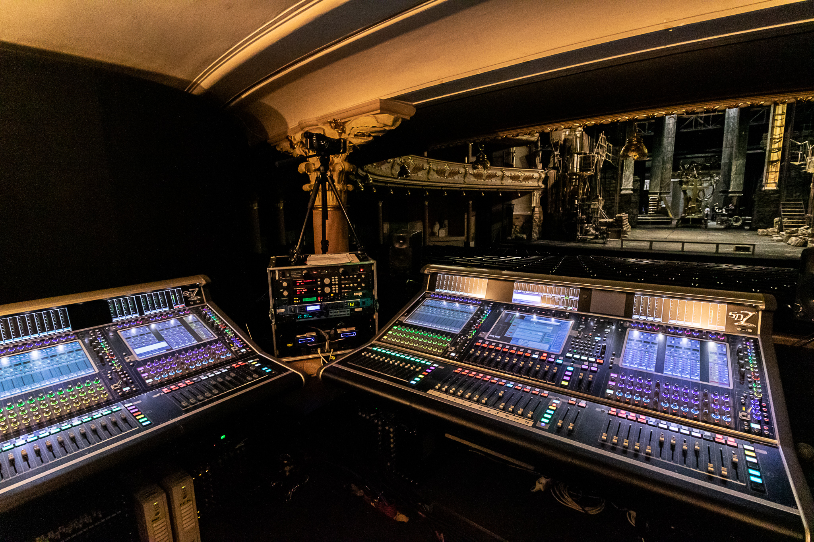

Místo
HD Karlín, Praha

Každý večer jiná show — stovky vstupů, desítky scén a nulová tolerance výpadku na živo.
Muzikálový provoz v historickém sále vyžaduje srozumitelnost slova i plnokrevný orchestr, imerzivní zážitek pro celé hlediště a systém, který spolehlivě zvládne denní změnu repertoáru — bez kompromisu v akustice památkově chráněného prostoru.

128 vstupů, 64 mix buss, FPGA processing, Theatre software se scénami a postavami, integrovaný Waves.
Redundantní optická síť, 32-bit DAC moduly, mic preampy — spolehlivá páteř signálu mezi jevištěm a FOH.
96kanálový prostorový systém — zvuk obklopující celé hlediště, srozumitelný v každé řadě.
PRO MUSIC = výhradní distributor DiGiCo a L-Acoustics pro ČR a SK.
Jedna platforma pro FOH i monitory s uloženými scénami a postavami drží show pohromadě každý večer. Redundantní jádro a optická síť minimalizují riziko výpadku, L-ISA přidává imerzivní rozměr bez stavebních zásahů do památkového sálu.
Spolehlivost každý večer — navrhujeme ji, ne jen dodáváme.